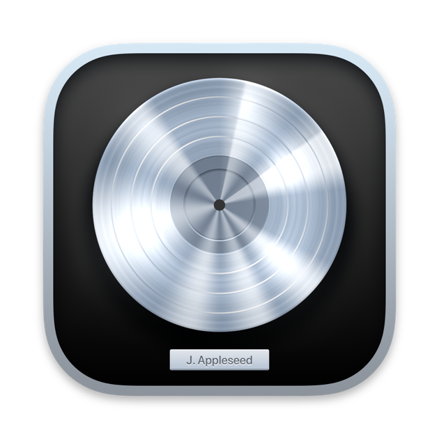

What is Logic Pro?
Logic Pro is a digital audio workstation (DAW) and MIDI sequencer software application for the macOS platform. It was originally created in the early 1990s as Notator Logic,[3] or Logic, by German software developer C-Lab which later went by Emagic. American technology company Apple acquired Emagic in 2002 and renamed Logic to Logic Pro. It is the second most popular DAW – after Ableton Live – according to a survey conducted in 2015.[4]

A consumer-level version based on the same interface and audio engine but with reduced features, called Logic Express, was also available at a reduced cost. Apple's GarageBand comes free with all new Macintosh computers and iOS devices and is another application built on Logic's audio engine. On December 8, 2011, the boxed version of Logic Pro was discontinued, along with Logic Express, and as with all other Apple software for Macs, Logic Pro is now only available through the Mac App Store.[5]